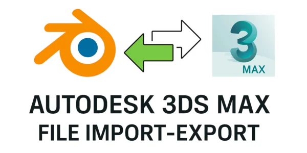
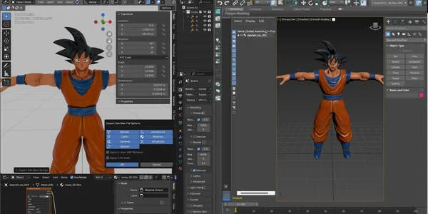
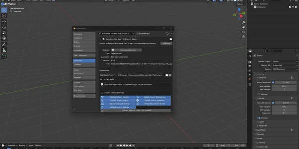
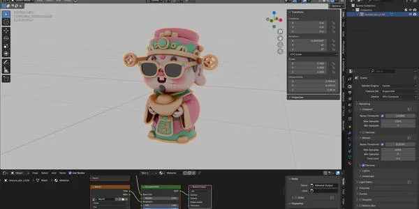
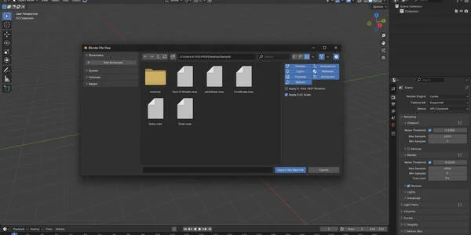
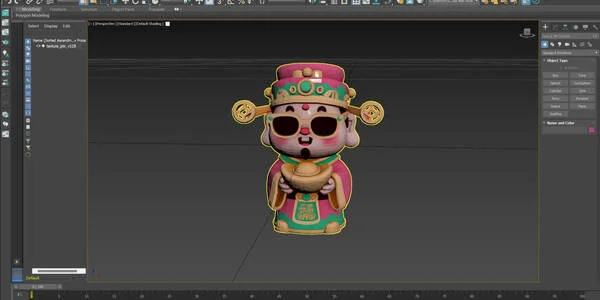

Autodesk 3ds Max 文件 导入-导出（.max）
$15.00相册












产品信息
描述
Autodesk 3ds Max 文件 Blender 导入-导出插件
通过这款强大的导入/导出插件，无缝弥合 Blender 和 Autodesk 3ds Max 之间的差距。
这款专业级工具通过在 Blender 中提供原生 .max 文件支持，实现业界最流行的两款 3D 应用程序之间的直接工作流程集成。
✨ 核心功能
🔄 双向文件支持
将 .max 文件直接导入 Blender，完整保留场景
将 Blender 场景导出为 .max 格式以兼容 3ds Max
高保真数据传输确保模型、材质和动画得以保留
⚙️ 高级导入选项
选择性资源导入：模型、灯光、摄像机、样条线、动画、材质、骨架
自动坐标系统调整（X 轴 180° 旋转选项）
缩放转换支持（0.01 倍缩放以兼容单位）
可自定义的默认导入设置，简化工作流程
🎯 智能导出控件
按对象类型过滤导出：网格、灯光、摄像机、曲线、动画
仅选中项导出，用于定向资源传输
保留材质分配和动画数据
维护场景层次结构和对象关系
🔧 智能 3ds Max 检测
基于注册表自动检测 3ds Max 安装
支持多个 3ds Max 版本（2020–2026+）
灵活的 Python 路径配置
全面的错误日志记录和故障排除
💼 专业工作流集成
拖放 .max 文件支持，即时导入
全面的偏好设置系统，支持按项目配置
详细的日志系统，用于调试和工作流程优化
Windows 平台优化，完整的注册表集成
🖥️ 技术规格
兼容 Blender 4.2+
Windows 平台支持
需要已安装 Autodesk 3ds Max（2023+）
使用原生 3ds Max Python API 和 MAXScript 进行可靠转换
确保广泛的兼容性和场景特性的保留
🎯 适合
使用混合 3ds Max/Blender 管线的工作室
跨不同 3D 应用程序协作的自由职业者
资产转换和迁移项目
教授多个 3D 平台的教育环境
优化跨平台工作流程的技术美术师
🚀 为什么选择此插件？
此插件消除了通常与 3ds Max 文件转换相关的复杂性，提供一键解决方案，保持场景完整性、材质分配和动画数据。
无论您是在迁移现有项目还是建立跨平台工作流程，此工具都提供专业 3D 制作环境所需的可靠性和功能。
👉 体验 Blender 和 3ds Max 之间的无缝互操作性 – 立即下载，简化您的 3D 工作流程！
文档
AUTODESK 3DS MAX 文件导入-导出插件
文档
目录
概述
安装
系统要求
配置
导入3ds Max 文件
导出到 3ds Max
高级设置
故障排除
FAQ
支持
1. 概述
Autodesk 3ds Max 文件导入-导出插件通过原生 .max 文件支持实现 Blender 和 Autodesk 3ds Max 之间的无缝集成。
该插件使用智能转换在文件传输过程中保持场景完整性、材质、动画和对象层次结构。
核心功能:
直接
.max文件导入/导出选择性资源过滤（模型、灯光、摄像机、样条线、动画）
自动检测 3ds Max 安装
拖放文件支持
全面的日志系统
专业工作流程集成
2. 安装
标准安装：
下载插件
.zip文件打开 Blender → 编辑 > 偏好设置 > 插件
点击安装...并选择
.zip启用插件，位于 Autodesk 3ds Max 文件 导入-导出
配置 3ds Max Python 路径（参见配置）
手动安装：
将插件解压到 Blender 的插件文件夹：
Windows:
%APPDATA%\Blender Foundation\Blender\[version]\scripts\addons\
重启 Blender
在以下位置启用插件： 偏好设置 > 插件
3. 系统要求
OS: Windows 10/11 (64-bit)
Blender: 4.2+
3ds Max: 2023+ (any edition)
Python: 兼容 3ds Max 安装
磁盘空间： 50MB+（用于临时文件）
RAM: 最低 4GB（推荐 8GB）
注意事项：
需要已安装的 Autodesk 3ds Max
不支持 Linux/macOS
首次设置可能需要管理员权限
4. 配置
初始设置：
打开偏好设置 > 插件
展开Autodesk 3ds Max 文件 导入-导出 设置
点击自动检测 （定位 3ds Max Python 路径）
如果检测失败，请手动浏览到：
C:\Program 文件\Autodesk\3ds Max 2025\Python\python.exeC:\Program 文件\Autodesk\3ds Max 2024\bin\python.exe
默认导入设置：
模型（已启用）
灯光（已启用）
摄像机（已启用）
样条线（已启用）
动画（已启用）
材质（已启用）
骨架（已启用）
应用 X 轴 180° 旋转（已禁用）
应用 0.01 缩放（已启用）
5. 导入 3DS MAX 文件
方法一：文件菜单
文件 > 导入 > Autodesk 3ds Max (.max)
选择
.max文件调整导入选项
点击导入
方法二：拖放
将
.max文件拖入 Blender 视口选项对话框出现
配置设置 → OK
导入选项：
模型、灯光、摄像机、样条线、动画、材质、骨架
X 轴 180° 旋转（坐标修正）
0.01 缩放（单位转换）
提示：
大型文件可能需要几分钟
检查系统控制台查看进度
确保有足够的磁盘空间
导入期间关闭占用资源的应用程序
6. 导出到 3DS MAX
标准导出：
文件 > 导出 > Autodesk 3ds Max (.max)
选择目标路径/文件名
配置导出选项
点击导出
导出选项：
模型、灯光、摄像机、样条线、动画
仅选中项（可选）
流程：
Blender 生成中间数据
3ds Max 转换为
.max临时文件自动清理
最终文件已保存
最佳实践：
导出前应用变换
使用标准材质
用简单场景测试
在 3ds Max 中验证导出的文件
7. 高级设置
日志系统：
日志存储在：
文档s\blender_3dsmax_log.txt包含转换步骤、错误和性能数据
缓存目录：
存储在：
文档s\blender_3dsmax_cache\操作后自动清理
性能优化：
使用 SSD 加快处理速度
为大型场景增加虚拟内存
关闭不必要的应用程序
监控系统资源
8. 故障排除
常见问题：
"找不到 3ds Max Python 可执行文件"
→ 验证安装，使用自动检测，或手动设置"导出失败"
→ 检查对象有效性、不支持的类型，或单独导出"3ds Max 脚本执行失败"
→ 验证安装完整性，释放磁盘空间，重启 Blender/3ds Max"导入显示空场景"
→ 启用过滤器，检查文件完整性，查看日志转换太慢
→ 降低场景复杂度，关闭应用程序，拆分大型场景文件太大
→ 优化纹理，减少多边形数量，简化动画
9. 常见问题
问：支持哪些版本的 3ds Max？
答：2020 及更高版本（自动检测已安装的最高版本）。
问：没有安装 3ds Max 可以使用吗？
答：不可以。需要已安装的 3ds Max。
问：材质会保留吗？
答：是的，启用选项后可以保留。保真度取决于材质系统。
问：动画呢？
答：关键帧会保留。程序化数据可能需要调整。
问：支持批量转换吗？
答：暂不支持。文件必须单独转换。
问：为什么使用中间 FBX？
答：Blender 和 3ds Max 之间的最佳兼容性。
问：Blender 扩展兼容性？
答：是的，包含 Blender 4.2+ 扩展的 manifest。
10. 支持
获取帮助：
查阅此文档
检查
blender_3dsmax_log.txt查看故障排除部分
联系支持并提供错误信息和日志
报告问题时，请包含：
Blender 版本
3ds Max 版本
操作系统详情
错误信息
复现步骤
日志内容
性能提示：
保持 Blender/3ds Max 为最新版本
确保 10GB+ 可用磁盘空间
关闭占用资源的后台应用
对网络文件使用有线连接
更新：
查看插件描述了解更新日志和新功能
版本: 1.0.0
最后更新： 2024
感谢您使用 Autodesk 3ds Max 文件导入-导出插件！
产品文件
- Autodesk_Max_文件_导入-导出_Pro.zip(1.0 KB)
- file_1.zip(18.2 KB)